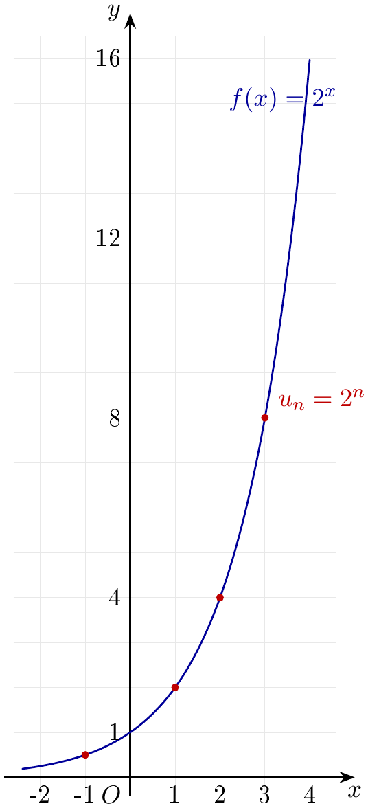
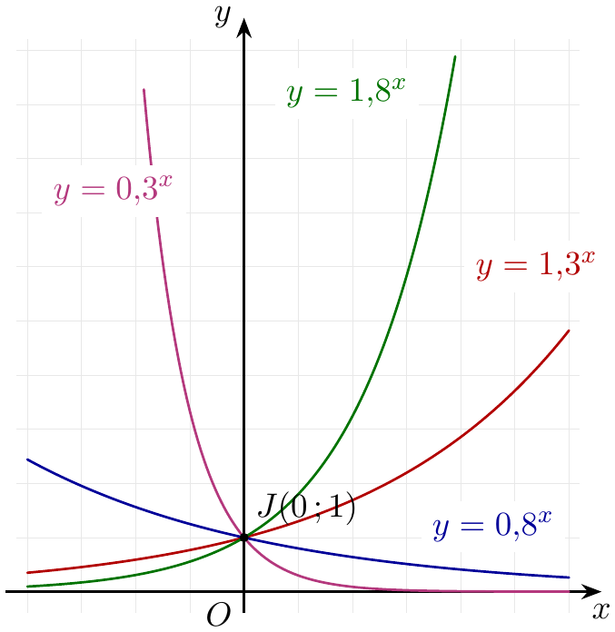
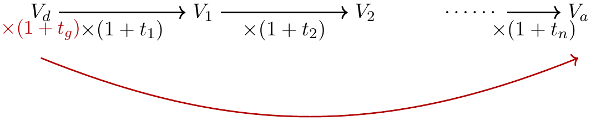

Chapitre IV : Fonction exponentielle de base $a$
Terminale STMG · Chapitre 4 — Exponentielle de base a · cours de Frederik de Peyrelongue
I. Définition de la fonction exponentielle de base $a$
1.1 Définition
Soit $a>0$ : la suite géométrique de premier terme $u_{0}=1$ et de raison $a$ admet comme forme générale
Soit $a$ un nombre réel strictement positif. On appelle fonction exponentielle de base $a$ la fonction $f$ définie sur $\R$ par
- La fonction $f(x)=1{,}5^{x}$ est appelée fonction exponentielle de base $1{,}5$.
- La fonction $f(x)=0{,}75^{x}$ est appelée fonction exponentielle de base $0{,}75$.
Remarque. Comme $a>0$, pour tout réel $x$ on a $a^{x}>0$.

1.2 Propriétés algébriques
Les règles de calcul sur les exponentielles de base $a$ sont les mêmes que pour les puissances entières.
Pour tout $a>0$, $b>0$, $x\in\R$ et $y\in\R$ :
II. Étude de la fonction exponentielle
2.1 Rappel : sens de variation d'une suite géométrique
Soit $(u_{n})$ une suite de raison $a$ et de premier terme $u_{0}$ strictement positif.
- Si $a>1$, alors la suite $(u_{n})$ est strictement croissante.
- Si $0<a<1$, alors la suite $(u_{n})$ est strictement décroissante.
- Si $a=1$, alors la suite $(u_{n})$ est constante.
2.2 Sens de variation de la fonction $f:x\mapsto a^{x}$
Soit $a$ un nombre réel strictement positif.
- Si $a>1$, alors la fonction $f:x\mapsto a^{x}$ est strictement croissante.
- Si $0<a<1$, alors la fonction $f:x\mapsto a^{x}$ est strictement décroissante.
- Si $a=1$, alors la fonction $f:x\mapsto a^{x}$ est constante.

- $f(x)=2{,}5^{x}$ est une fonction strictement croissante car $2{,}5>1$.
- $f(x)=0{,}5^{x}$ est une fonction strictement décroissante car $0<0{,}5<1$.
Remarque. Toutes les fonctions exponentielles de base $a$ passent par le point de coordonnées $J(0\,;1)$.
2.3 Sens de variation des fonctions $f:x\mapsto k\times a^{x}$
Soit $a$ un nombre réel strictement positif et $k$ un nombre réel non nul.
- Si $k>0$, alors la fonction $f:x\mapsto k\times a^{x}$ a le même sens de variation que la fonction $x\mapsto a^{x}$.
- Si $k<0$, alors la fonction $f:x\mapsto k\times a^{x}$ a un sens contraire de variation à celui de la fonction $x\mapsto a^{x}$.
$f(x)=-3\times 2{,}5^{x}$ est une fonction strictement décroissante : car $2{,}5>1$ donc $x\mapsto 2{,}5^{x}$ est strictement croissante, mais $-3<0$, donc la fonction $f$ a un sens contraire de variation.
III. Application : le taux d'évolution moyen
3.1 Rappel : taux d'évolution globale
Lors d'évolutions successives, les coefficients multiplicateurs se multiplient.

On a
Le taux global $T$ correspond à
Une quantité augmente d'abord de $10$ % puis baisse de $5$ %.
Le taux global d'évolution correspondant à $n$ évolutions successives de taux d'évolution $t_{1}$, $t_{2}$, …, $t_{n}$ est le nombre $T$ tel que
3.2 Taux d'évolution moyen
Le taux d'évolution moyen $t$ correspondant à deux évolutions successives de taux d'évolution respectifs $t_{1}$ et $t_{2}$ est le taux qui, répété $2$ fois, donnerait le même taux global.
Pour l'obtenir, on doit donc résoudre l'équation :
Donc
L'action de la société Total a augmenté de $5$ % en 2025 et de $11$ % en 2026.
Le taux global $T$ est égal à
Donc le taux moyen $t$ vérifie :
Donc le taux moyen $t$ est égal à environ $12{,}3$ %.
Remarque. Il s'agit d'une « moyenne », mais pas au sens habituel : c'est une moyenne géométrique ! La moyenne habituelle est appelée moyenne arithmétique.
Le taux d'évolution moyen $t$ correspondant à $n$ évolutions successives de taux d'évolution respectifs $t_{1}$, $t_{2}$, …, $t_{n}$ est le taux qui, répété $n$ fois, donnerait le même taux global.
Pour l'obtenir, on doit donc résoudre l'équation :
Donc
Remarque. La puissance $\dfrac{1}{n}$ annule les effets de la puissance $n$ :
L'action Total augmente de $30$ % en 2027.
Donc le taux moyen vérifie l'équation :
Donc
D'où le taux moyen est de $17{,}9$ %.